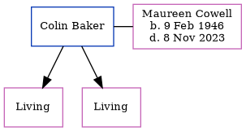

Colin E Baker
[ Home ] | [ Calendar ] | [ Surnames Index ] | [ Errors ] | [ Family History ]Colin Baker, the husband of Maureen Joyce Cowell (the cousin on the mother's side of Nigel Horne), and married Maureen (with whom he had 2 surviving children Annette Jane and Caroline) in Bridge, Kent, England around Feb 19691 (Jan/Feb/Mar Confirmed that this is the correct husband for Maureen Cowell in e-mail conversation.).
Citations
- England & Wales, Marriage Index: 1916-2005 Online publication - Provo, UT, USA: The Generations Network, Inc., 2009.Original data - General Register Office. England and Wales Civil Registration Indexes. London, England: General Register Office. © Crown copyright. Published by permission of the Cont
Media
England & Wales marriages 1837-2008 - BMD/M/1969/1/AZ/000226/152
UK electoral registers 2002-2014 Transcription - 192-BAKER-MAUREEN-CT4-1749414534
Family Tree
Map
Generated by ged2site. Last updated on Jul 3, 2024